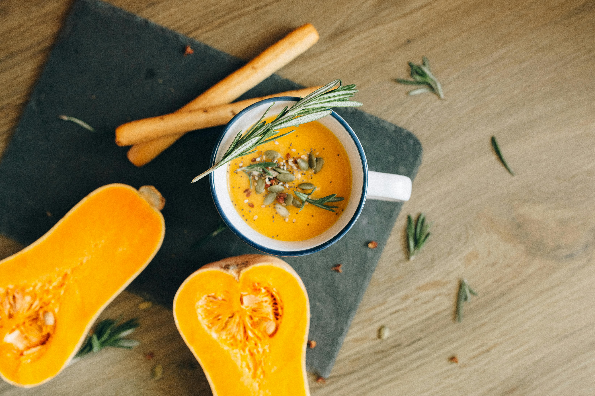

Home
Butternut Soup Recipe 🍲
Prep Time: 15 minutes | Cook Time: 55 minutes

Ingredients
For the roasted butternut squash
- 6 ½ cups Butternut Squash
- 1 Tbsp Olive Oil Extra Virgin
- ½ tsp Dried Thyme
- ½ tsp Dried Basil
- ⅛ tsp Sea Salt
- ⅛ tsp Ground Black Pepper
For the soup
- 2 Tbsp Olive Oil Extra Virgin
- 1 Medium Onion White, Yellow or Brown, Chopped
- 1 Tbsp Crushed Garlic
- ½ tsp Cumin
- ⅛ tsp Paprika
- 4 cups Vegetable Stock
- 1 Tbsp Soy Sauce
- 1 cup Coconut Milk
- Sea Salt and Ground Black Pepper to taste
Steps
- Preheat the oven to 400°F (200°C).
- Add peeled and chopped butternut squash to a mixing bowl. Add the extra virgin olive oil, dried thyme, dried basil, sea salt and ground black pepper and toss the butternut with the olive oil and spices until lightly coated.
- Transfer the butternut squash to a parchment lined baking tray and space the pieces evenly.
- Bake for 30 minutes until roasted.
- When the butternut squash is roasted, add olive oil to a pot along with the chopped onion, crushed garlic, cumin and paprika and sauté until the onions are softened.
- Add the roasted butternut squash and toss it with the onions and spices. Add the vegetable stock and soy sauce.
- Bring to a simmer. Let it simmer for around 15 minutes for the flavors to blend.
- Switch off the heat and use an immersion blender (handheld blender) to blend the soup directly in the pot. If you don’t have an immersion blender then let the soup cool for a few minutes and then transfer to your blender jug in stages. Blend it and then when the soup is all blended, return it to the pot.
- Stir in the coconut milk.
- Add sea salt and ground black pepper to taste.
- Ladle into bowls and serve topped with a sprinkle of ground black pepper and a sprig of fresh thyme.